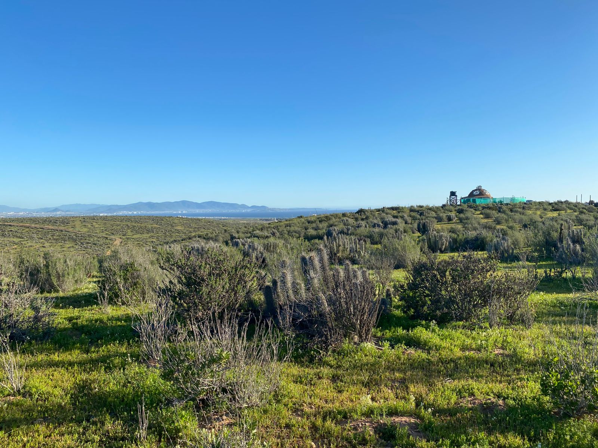
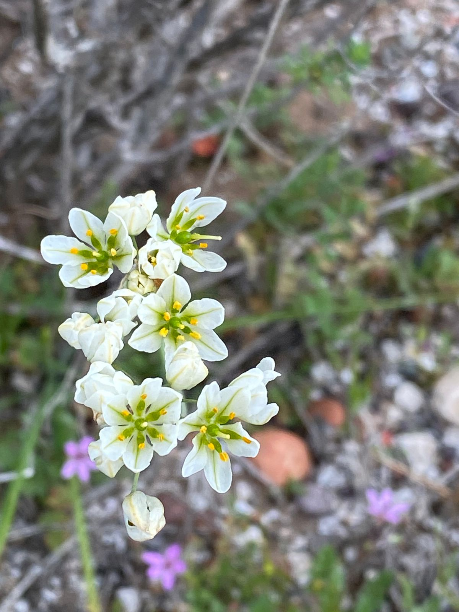
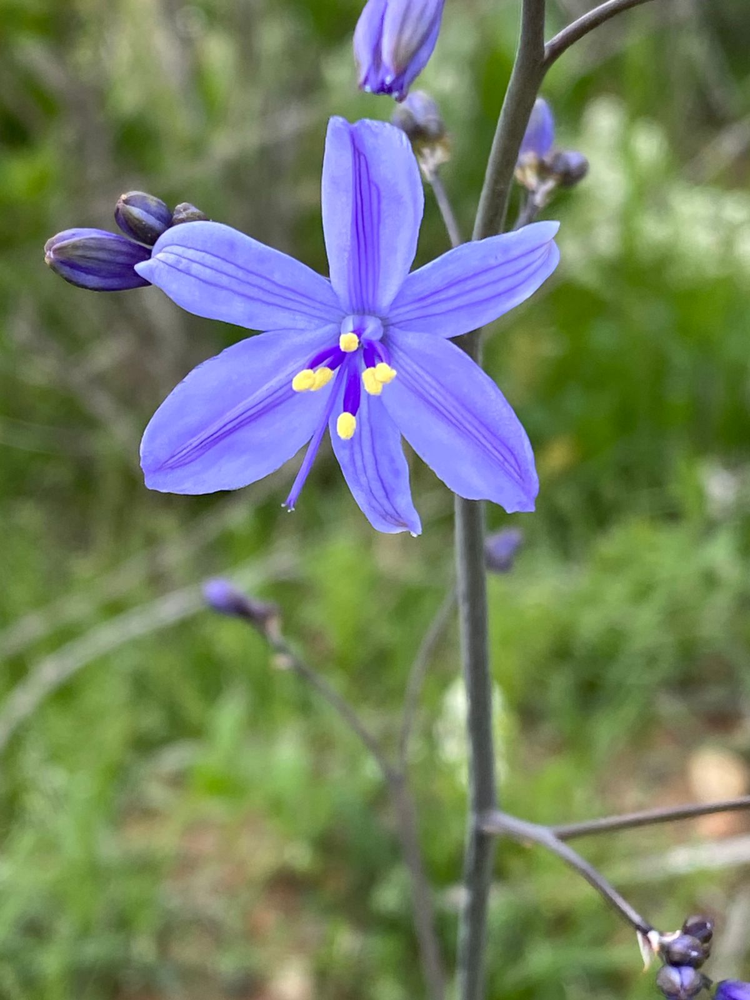
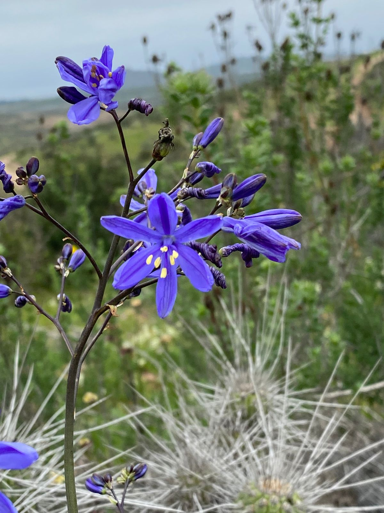
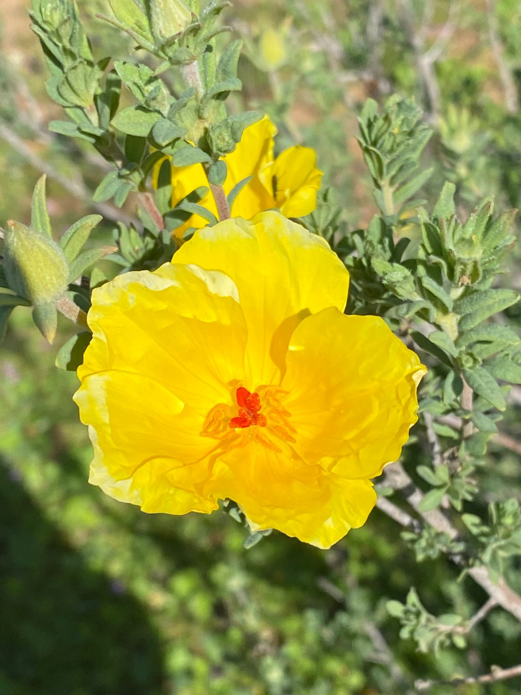
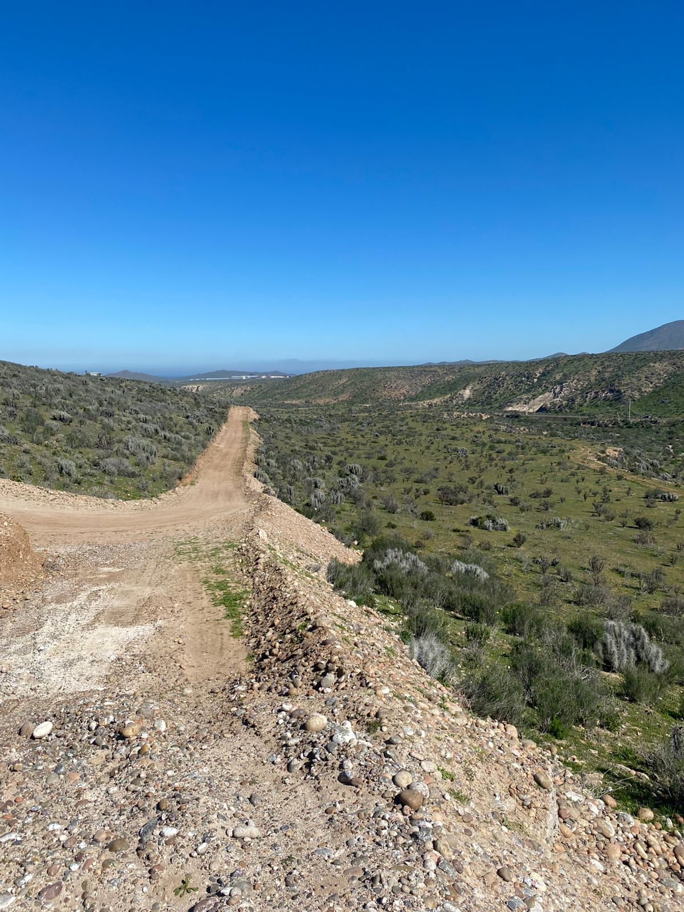
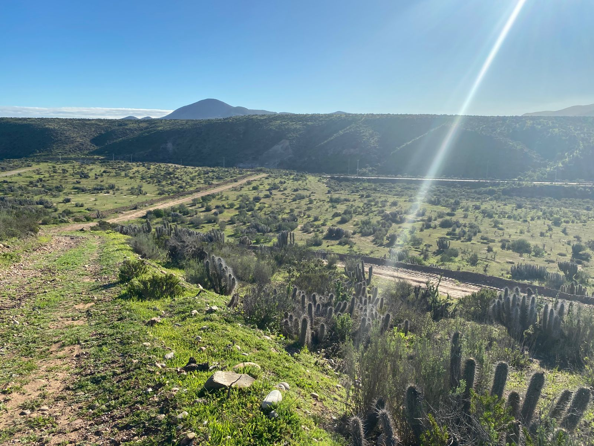
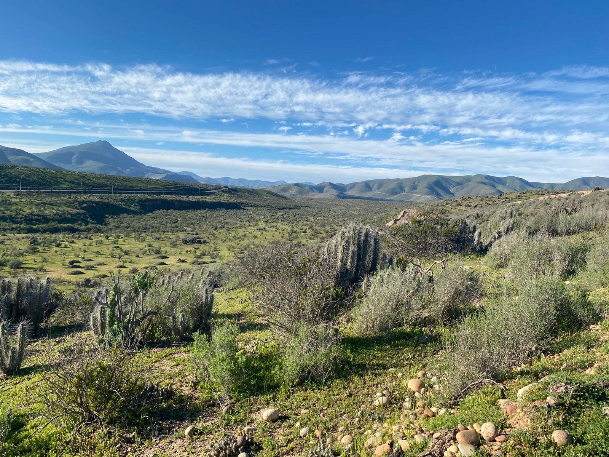

Transparencia
Estado actual del proyecto
Creemos en la comunicación honesta sobre el avance de cada etapa
Proyecto en Desarrollo
Planificación general
Definición de lotes, planos y caminos
CompletadoEstudios técnicos
Análisis de suelo, topografía y recursos hídricos
CompletadoHabilitación de terrenos
Nivelación de lotes y trazado de vías de acceso
CompletadoProceso de subdivisión
Trámites legales y administrativos en curso
En etapa finalInfraestructura base
Caminos internos y servicios básicos
Proyectado
Imágenes
Galería del proyecto
El entorno natural de Mar y Cielo en imágenes reales








Experiencia Inmersiva
Masterplan 360°
Explora el proyecto completo con nuestra herramienta de visualización interactiva
Instrucciones: Navega arrastrando con el mouse, haz zoom con la rueda y haz clic en los puntos de interés para más información sobre cada lote.
Hablemos
Contacto
Estamos disponibles para responder tus consultas y coordinar una visita al terreno